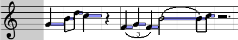

(Obvious menu items have been left out)
File > New
Creates a new song. It will appear as a new tab in the bar that shows currently open sequences (a la Firefox tabs). You can then just click on the newly appeard tab to switch to this song.
File > Song Info
Midi files allow their author to specify information like title and copyright.
Edit > Paste at cursor
Pastes the selected notes near the cursor (using this item from the menu has little use of course, you need to use the keyboard shortcut : CMD/CTRL + SHIFT + V).
Edit > Select notes...
Select notes according to criteria. Most of these criteria are based on a currently selected note. For instance, if you want to select all G notes, you can just select one G notes, choose this option in the menu, check "select all notes that have the same pitch", click OK, and it’s done!
You can also use this feature to select all notes within a range of measures (i.e. if you want to select all notes from measures 65 to 78)
Edit > Snap notes to grid
Aria uses a "magnetic grid" to ensure that notes have a precise location and duration, corresponding to those of music theory. If you end with notes that seem to have unusual lengths/locations, select the notes, select an appropriate grid size (see below in track docs) and select this option.
Edit > Remove Overlapping Notes
If you copied a hundred notes, pasted them right on top of their original ones, and accidentally unselected them before moving them - all notes now have doubles! Fortunately you can just select those notes and use this feature. It can be used in other cases too - you get the picture.
Track > Properties
Lets you set the current track's properties, including (1) default volume to use for new notes, (2) background (displays notes from other tracks, currently works only in Piano editor).
When you create a new song or just open Aria, you get one track in keyboard view. You can add and delete tracks as you wish with the "Tracks" menu.
 Collapse It enables you to collapse or expand the track. You can collapse a track when you don’t need it for now, so that it doesn’t uselessy take place on the screen. When a track is collapsed, the editor is hidden and only the header (what you see on the screenshot) remains. You can bring the track back by clicking again on the same triangle.
Collapse It enables you to collapse or expand the track. You can collapse a track when you don’t need it for now, so that it doesn’t uselessy take place on the screen. When a track is collapsed, the editor is hidden and only the header (what you see on the screenshot) remains. You can bring the track back by clicking again on the same triangle. Mute It allows you to mute the track. Click on the speaker: a X appears on it. Next time you hit play, the track will not play anything. Click again to unmute.
Mute It allows you to mute the track. Click on the speaker: a X appears on it. Next time you hit play, the track will not play anything. Click again to unmute.


 Editor These indicate the current editor (how the notes are displayed and edited). You can click on the piano to go in piano roll mode, you can click on guitar to get a tablature view, etc. (See editors below for more info).
Editor These indicate the current editor (how the notes are displayed and edited). You can click on the piano to go in piano roll mode, you can click on guitar to get a tablature view, etc. (See editors below for more info). Channel
This widget will only appear if you turned channel management to manual (see Settings menu above). It allows you specify in which channel this track will play. (In the midi specs, there are 16 channels, 0 to 15, where channel 9 is drums).
Piano editor
Channel
This widget will only appear if you turned channel management to manual (see Settings menu above). It allows you specify in which channel this track will play. (In the midi specs, there are 16 channels, 0 to 15, where channel 9 is drums).
Piano editor
This is the default view. It shows a simple piano roll with the notes on it.
To add a note, simply hold the mouse button down and drag horizontally on the track. When you release the mouse, a note will be placed where you clicked, with the length of your frag. Try it, it’s easy! There is a preview to show you where the note will be when you release the mouse.
To select a single note, you can simply click on it. Selected notes appear colored in tones of yellow/green.
To select many notes, you can simply drag the mouse across the track. At first, it might look like Aria wants to add a new note, but don’t bother. Once you have moved the mouse enough vertically, it will understand you want to select and will instead display a selection rectangle like you can see in all apps. All notes in the rectangle when you release the mouse will be selected.
If you have some notes already selected, and want to select more, hold down shift while selecting additionnal notes.
If you have some notes already selected, but want to unselected specifically some of them, hold down alt and click on them.
You can play selected notes by pressing space bar.
To change the volume of a note, right-click on it. A pop-up window will appear. You can then either drag the slider or manually enter a value and press enter. Midi volumes range from 0 (inaudible) to 127 (loudest). If you right-click on a bunch of selected notes, it will set the volume for all notes. If you want to cancel entering anew volume, press escape.
The color of a note also shows its volume. Loud notes are drawn darker that soft ones.
To move a note, you can just click on it, hold the mouse button down and drag it to its new location. You can also drag a bunch of selected notes the same way, by dragging.
Alternatively, you can move selected notes by pressing the arrow keys on your keyboard.
To change the duration of one (or many) note, select it, hold down command or control key, and hit the left or right arrow key on your keyboard. Each time you press an arrow key, the note will be resized in the direction the arrow points. (Try it! It’s clearer when you see it)
You can delete selected notes by pressing backspace or delete keys on the keyboard.
You can move notes one octave up or down by using shift + up/down keys, and to the next or previous measure with shift + left/right keys.
Guitar Editor
This editor allows you to edit your song as a guitar tablature. (If you don’t know what tablature is, or don’t play guitar, you probably
won’t be interested by this editor)
You may want to read the section about Piano editor, since everything from Piano editor also applies in Guitar editor.
In guitar editor, when you move a note up or down on the strings, it will keep the same fret number, and its pitch will adapt to its new string.
If you want to move a note vertically but keep same pitch (for instance, 10 on A string has the same pitch as 5 on D string and same pitch
as 0 on G string) Aria can do that for you, simply select the note, hold down shift, and hit the up or down arrow key. Nothing
will happen if you are trying to move a note to a string where it cannot be played.
If you want to change the fret number, simply select a note a press the appropriate number key, either in the num pad at the right of the
keyboard, or in the numeric keys at the top of the keyboard. For numbers higher than 9, you can hold down the shift key and press a number.
For instance, shift+5 will be 15, shift+7 will give 17. You may also use keyboard shortcuts command + up (or control + up) and
command + down (or control + down) to increase or decrease a note's fret number.
You can also change the tuning of the guitar by clicking on the string names on the left and selecting a new tuning.
If some notes, mainly from an imported midi file, or that were added in another editor, don’t seem to be placed on the right strings
(e.g. many notes are played simultaneously on the same string, or a chord that could be played on 3 consecutive strings in split, etc.) you can
also choose "Rearrange selected notes" from the drop-menu when you click on the left part of the editor (the part with string names).
It will attempt to rearrange notes in a more meaningful way. (Right now this feature is not completed and may not always give right results,
but overall it’s not bad)
Score Editor
Allows you to edit music with a notation closer to classical music notation.
This editor works very similarly to piano editor, so if you are not used to working with keyboard editor you may want to try that first.
When you move a note up or down, it will by default move it vertically to the next score line.
If you instead want to move a note by semi-tones (e.g. in order to introduce accidentals) simply hold down the shift key while pressing the up/down arrow keys. You can also use the sharp/flat/natural buttons found in the header of the track:
Drum Editor 
Allows you to edit drums. When you are in this mode, the set of instruments proposed to you is different.
Midi allows only one drum channel per song. It’s okay if you use more than one drum track in Aria, however only one drumset can be used when playing and exporting. (For instance, you can’t have a room kit in one track and an orchestral kit in another)
You may want to read the part about Piano editor, since it mostly works the same, with the exception that drum hits don’t have a duration. When you add a drum, no need to drag mouse, just click where you want to add a drum hit.
Drums are organised in sections - you can hide a section you don’t use by clicking on the little white triangle beside its name.
Just above the name of the first drum is a black collapse/expand arrow. Clicking on it will hide all unused drums.
Controller Editor
This editor is different from other editors, because it doesn’t allow you to change the notes themselves, but details of how they’re played.
For instance, Pan will let you choose where the note should play in stereo speakers, Reverb will let you add echo to the instrument, Volume will allow you to change the general volume at will.
The controller editor appears as a pane with a value on top and a value on the bottom (see picture).
You can firstly add sudden changes with a single click, the horizontal position being the time where it happens, the vertical position being how much effect you want (see the labels at top and bottom of the editor to know what the vertical parameter means).
If you do not want a sudden change, but rather a progressive slide, you can hold down the mouse and drag. This will create a line following the cursor that you can use for creating progressive effect changes.
You can select in controller editor by holding down the shift key on your keyboard and dragging. You can then delete the selected part by pressing backspace or delete keys on the keyboard.
You can unselect the selection by holding down shift and clicking without dragging, or simply choosing "Select none" from the menus.